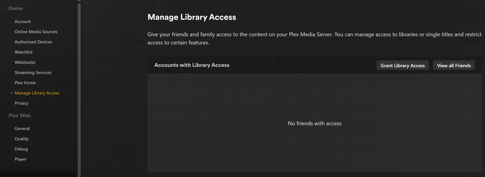

rex com seu próprio app
rex é um servidor de mídia para os aplicativos oficiais do Plex que não guarda arquivo nenhum. Os aplicativos oficiais do Plex o enxergam como um servidor Plex normal. Outro programa, que nesta página chamamos de seu app, informa ao rex o que existe na sua biblioteca e entrega os arquivos. Quando você aperta play, o rex transmite o arquivo direto do seu app. Nada é baixado antes.
Esta página leva você do zero até assistir um filme, passo a passo. Ela não pressupõe nenhum app específico. Ela diz exatamente o que o rex espera de um app, para que você possa conferir se o seu faz isso, ou criar um. Cada passo explica o que faz, por que importa e o que você deve ver antes de seguir em frente.
Quatro coisas para saber antes de começar:
- Seu app entrega os arquivos. O rex busca cada byte do seu app por HTTP ou HTTPS, do mesmo jeito que um navegador baixa um arquivo. O rex não guarda arquivos e não precisa de disco nem de montagem para a mídia.
- Seu app informa ao rex o que ele tem. Ele envia ao rex uma lista de arquivos pela API de feed do rex, e todas as mudanças depois disso. O rex nunca lista uma pasta nem escaneia nada.
- Seu app decide o que cada arquivo é. Ele diz se um arquivo é um filme ou um episódio, a qual título ele pertence (pelo id do IMDb e do TMDB) e, no caso de um episódio, a temporada e o número. O rex nunca adivinha pelo nome do arquivo.
- O Plex descreve o conteúdo. Quando o rex está em uma conta Plex, ele mostra cada título com o nome, o pôster, a sinopse e os nomes dos episódios que os metadados próprios do Plex têm para esses ids. Para coisas que nenhum agente do Plex conhece, seu app dá o nome por conta própria: veja Building rex addons.
O rex é gratuito para uso pessoal (PolyForm Noncommercial): não há plano de patrocinador e você não precisa de conta para baixá-lo. Veja rex.debridmediamanager.com. Só tem celular ou TV box? rex para Android roda o rex e os addons nele. Para patrocinadores, o zurg+rex, um servidor Plex no seu celular, também conecta sua biblioteca debrid e Usenet ao rex.
Antes de começar
O que seu app precisa fazer
Passe esta lista para quem faz o seu app. A referência da API do próprio rex está em docs/feed-api.md.
Passo 1. Instale o rex
O que ele faz. Baixa o rex para ~/rex ($HOME\rex no Windows) e o inicia como serviço, com tudo que os próximos passos precisam. Os passos depois deste não precisam de reinício; só as seções opcionais mais abaixo precisam.
Por que isso importa. O rex é com quem os seus apps do Plex conversam. A primeira inicialização cria o rex.db, que guarda suas bibliotecas, tudo que o seu app envia e seu histórico de exibição.
No Linux você também pode rodar a imagem Docker do rex: veja
mkdir -p ~/rex && cd ~/rex
TAG=$(curl -fsSL 'https://api.github.com/repos/debridmediamanager/rex/releases?per_page=1' | sed -n 's/.*"tag_name": *"\([^"]*\)".*/\1/p' | head -1)
P=$(uname -s | tr A-Z a-z)-$(uname -m | sed 's/x86_64/amd64/;s/aarch64/arm64/')
curl -fL "https://github.com/debridmediamanager/rex/releases/download/$TAG/rex-$TAG-$P.tar.gz" | tar xz --strip-components=1No PowerShell:
New-Item -ItemType Directory -Force $HOME\rex | Out-Null; cd $HOME\rex
$tag = (Invoke-RestMethod 'https://api.github.com/repos/debridmediamanager/rex/releases?per_page=1')[0].tag_name
curl.exe -fLO "https://github.com/debridmediamanager/rex/releases/download/$tag/rex-$tag-windows-amd64.zip"
tar -xf "rex-$tag-windows-amd64.zip" --strip-components=1; Remove-Item "rex-$tag-windows-amd64.zip"Isso pega a build mais nova do rex, geralmente uma nightly, para a sua máquina.
Descubra o IP da LAN do rex, o endereço dele na sua rede doméstica. No Linux, hostname -I mostra vários: pegue o da sua rede doméstica, não um que começa com 172.17. (Docker) ou 100. (Tailscale). No macOS, ipconfig getifaddr en0 mostra (use en1 se não aparecer nada). No Windows, ipconfig lista ele como IPv4 Address no adaptador Wi-Fi ou Ethernet. Esta página escreve ele como 192.168.1.20 em todo lugar: coloque o seu no lugar. Os apps do Plex, o seu app e os seus próprios comandos chegam ao rex por ali.
O Plex Media Server roda na mesma máquina? Termine o comando de início do rex abaixo com --port 32500 e use 32500 em todo lugar em que um comando ou configuração diz 32400, inclusive na regra do firewall do Windows: o Plex já usa a porta 32400 e as portas que os apps usam para encontrar servidores, e em qualquer outra porta o rex deixa essas para o Plex. Depois, seus apps vão listar dois servidores com o nome da máquina: o rex é o que foi compartilhado com você, com o nome da conta nova ao lado. Quando o rex estiver na sua conta do Plex (
Agora transforme ele em serviço:
Crie ~/.config/systemd/user/rex.service:
mkdir -p ~/.config/systemd/user
nano ~/.config/systemd/user/rex.service[Unit]
Description=rex
After=network-online.target
[Service]
WorkingDirectory=%h/rex
EnvironmentFile=-%h/rex/rex.env
ExecStart=%h/rex/rex
Restart=always
RestartSec=5
[Install]
WantedBy=default.targetsystemctl --user daemon-reload
systemctl --user enable --now rex
sudo loginctl enable-linger "$USER"
journalctl --user -u rex -fO comando de início do rex é a linha ExecStart, e as chaves vão em ~/rex/rex.env, uma NAME=value por linha. Depois de uma mudança, systemctl --user daemon-reload && systemctl --user restart rex reinicia o rex. journalctl --user -u rex -f mostra o log dele. loginctl enable-linger mantém o rex rodando quando você sai da sessão.
run.sh inicia o rex na pasta dele, e um LaunchAgent inicia o run.sh quando você faz login:
cp ~/rex/examples/run.sh.example ~/rex/run.sh
mkdir -p ~/Library/LaunchAgents
cat > ~/Library/LaunchAgents/com.rex.plist <<PLIST
<?xml version="1.0" encoding="UTF-8"?>
<!DOCTYPE plist PUBLIC "-//Apple//DTD PLIST 1.0//EN" "http://www.apple.com/DTDs/PropertyList-1.0.dtd">
<plist version="1.0"><dict>
<key>Label</key><string>com.rex</string>
<key>ProgramArguments</key><array><string>/bin/bash</string><string>$HOME/rex/run.sh</string></array>
<key>RunAtLoad</key><true/><key>KeepAlive</key><true/>
<key>StandardOutPath</key><string>$HOME/rex/rex.log</string>
<key>StandardErrorPath</key><string>$HOME/rex/rex.log</string>
</dict></plist>
PLIST
launchctl load ~/Library/LaunchAgents/com.rex.plist
tail -F ~/rex/rex.logO comando de início do rex é a última linha de ~/rex/run.sh, e as chaves vão em ~/rex/rex.env, uma NAME=value por linha. Depois de uma mudança, launchctl kickstart -k gui/$(id -u)/com.rex reinicia o rex. tail -f ~/rex/rex.log mostra o log dele.
O rex roda enquanto você estiver logado no Mac. Para um Mac que reinicia sozinho, ative o login automático (System Settings, Users & Groups). Se o firewall do macOS estiver ligado, permita o rex quando o macOS perguntar, ou adicione ~/rex/rex em Options do firewall.
Abra o PowerShell como administrador e vá para a pasta do rex com cd $HOME\rex. Primeiro crie o run.cmd, que inicia o rex na pasta dele e grava o log em rex.log. O Bloco de Notas oferece para criar o arquivo:
notepad run.cmd@echo off
cd /d "%~dp0"
rex.exe 2>> rex.logSalve. Depois libere sua rede no Windows Firewall para a porta do rex e para as duas portas de descoberta, e inicie o rex agora e sempre que você fizer login:
New-NetFirewallRule -DisplayName rex -Protocol TCP -LocalPort 32400
New-NetFirewallRule -DisplayName "rex discovery" -Protocol UDP -LocalPort 32410,32414
$settings = New-ScheduledTaskSettingsSet -ExecutionTimeLimit 0 -AllowStartIfOnBatteries -DontStopIfGoingOnBatteries
Register-ScheduledTask rex -Action (New-ScheduledTaskAction -Execute "$HOME\rex\run.cmd") -Trigger (New-ScheduledTaskTrigger -AtLogOn -User $env:USERNAME) -Settings $settings
Start-ScheduledTask rex; Start-Sleep 3
Get-Content rex.log -WaitO comando de início do rex é a linha rex.exe do run.cmd, e as chaves vão acima dela, uma set NAME=value por linha. Depois de uma mudança, Stop-Process -Name rex; Start-Sleep 1; Start-ScheduledTask rex reinicia o rex. Get-Content $HOME\rex\rex.log -Wait mostra o log dele.
Iniciou o rex manualmente no PowerShell? Então o log fica só naquela janela, sem rex.log, e nenhuma tarefa o inicia depois de reiniciar. O rex guarda o banco de dados e a vinculação na pasta em que é iniciado, então um rex iniciado de outra pasta é um servidor novo, sem vínculo. Pare com Ctrl+C e depois inicie de novo na pasta do rex com as mesmas flags ou, melhor ainda, configure a tarefa acima.
O rex roda enquanto você estiver logado no Windows, em uma janela própria: deixe-a aberta. No PowerShell, digite curl.exe onde esta página disser curl: o curl do próprio Windows PowerShell é outro comando.
O que você deve ver. Entre as primeiras linhas:
INFO seeded rex.db: an empty library named yourhost, machine=...
INFO no source yet: a source registers itself once pointed at this server (PUT /rex/sources/{name}, docs/feed-api.md)
INFO claim state: unclaimed
INFO rex on http://192.168.1.20:32400 machine=... items=0 parts=proxyO rex se dá o nome da máquina; seus apps do Plex mostram esse nome. no source yet está certo: nenhum app se registrou ainda. Deixe o log aberto.
Passo 2. Veja funcionando manualmente
O que faz. Faz o papel do seu app para um único filme, com um servidor de arquivos descartável e dois comandos curl.
Por que importa. Ele prova que o rex funciona nesta máquina antes de o seu app entrar em cena. Se este passo funcionar e o seu app não, o problema está no seu app. Pule este passo se o seu app já estiver configurado.
Você precisa do ffprobe, de um servidorzinho web e de um arquivo de vídeo. Você registra a pasta do arquivo no rex com o nome test e depois envia o arquivo ao rex, dizendo que é o filme Sintel (IMDb tt1727587, TMDB 45745) junto com a saída do ffprobe.
Instale o ffprobe e o jq (sudo apt install -y ffmpeg jq no Linux, brew install ffmpeg jq no macOS). Coloque o arquivo onde um servidorzinho web consiga servi-lo:
mkdir -p ~/rex-test/movies/Sintel.2010
cp /path/to/any-video.mkv ~/rex-test/movies/Sintel.2010/Sintel.2010.mkv
cd ~/rex-test
python3 -m http.server 8099 --bind 127.0.0.1 &Registre no rex:
curl -s -X PUT http://192.168.1.20:32400/rex/sources/test \
-H 'Content-Type: application/json' -d '{"url": "http://127.0.0.1:8099"}'Envie o arquivo para o rex:
P=movies/Sintel.2010/Sintel.2010.mkv
jq -n --arg p "$P" \
--argjson probe "$(ffprobe -v quiet -print_format json -show_format -show_streams "$P")" \
'{items: [{id: $p, path: $p, kind: "movie", ids: {imdb: "tt1727587", tmdb: 45745}, media_info: $probe}]}' \
| curl -s -X POST http://192.168.1.20:32400/rex/feed/test/items \
-H 'Content-Type: application/json' --data-binary @-Instale o ffprobe e o Python com winget install Gyan.FFmpeg e winget install Python.Python.3.13, depois abra uma nova janela do PowerShell. Coloque o arquivo onde um servidorzinho web consiga servi-lo:
New-Item -ItemType Directory -Force $HOME\rex-test\movies\Sintel.2010 | Out-Null
Copy-Item C:\path\to\any-video.mkv $HOME\rex-test\movies\Sintel.2010\Sintel.2010.mkv
cd $HOME\rex-test
$server = Start-Process py '-m http.server 8099 --bind 127.0.0.1' -WindowStyle Hidden -PassThruRegistre no rex:
Invoke-RestMethod -Method Put http://192.168.1.20:32400/rex/sources/test -ContentType application/json -Body '{"url": "http://127.0.0.1:8099"}'Envie o arquivo para o rex:
$p = 'movies/Sintel.2010/Sintel.2010.mkv'
$probe = ffprobe -v quiet -print_format json -show_format -show_streams $p | Out-String | ConvertFrom-Json
$item = @{ id = $p; path = $p; kind = 'movie'; ids = @{ imdb = 'tt1727587'; tmdb = 45745 }; media_info = $probe }
Invoke-RestMethod -Method Post http://192.168.1.20:32400/rex/feed/test/items -ContentType application/json -Body (ConvertTo-Json @{ items = @($item) } -Depth 20)O PowerShell mostra as respostas do rex como listas em vez de JSON.
O que você deve ver. A resposta é {"created":1,"updated":0,"held":0,"unchanged":0} e o log do rex imprime:
INFO FEED identified "Sintel.2010" -> movie tmdb:45745 (placed)
INFO FEED test upsert: 1 created, 0 updated, 0 held, 0 unchanged, 0 rejectedO Sintel agora está em Movies, reproduzido pelo servidorzinho web. Nenhum app de Plex consegue abrir o rex antes do
Limpeza antes de seguir em frente: remover a fonte de teste remove tudo o que ela enviou. A primeira requisição responde com um caminho confirm; envie um DELETE para esse caminho em até cinco minutos.
curl -s -X DELETE http://192.168.1.20:32400/rex/sources/test
curl -s -X DELETE "http://192.168.1.20:32400/rex/sources/test/confirm/<code from the answer>"
kill %1Invoke-RestMethod -Method Delete http://192.168.1.20:32400/rex/sources/test
Invoke-RestMethod -Method Delete "http://192.168.1.20:32400/rex/sources/test/confirm/<code from the answer>"
Stop-Process -InputObject $serverSe não der certo.
"held":1: omedia_infoestá faltando ou não tem streams. Confira se offprobeimprimiu JSON para o arquivo.- Uma resposta com
rejected: o arquivo não é um vídeo pela extensão, é uma amostra, não temidoupath, tem um caminho malformado, ou outroidjá usa o seu path. A resposta e o log do rex mostram cada motivo. 404 no such source: oPUT /rex/sources/testnão aconteceu antes.
Passo 3. Adicione a uma conta Plex
O que faz. Registra o rex em uma conta do Plex, como você faria com um Plex Media Server de verdade, e compartilha com a sua própria conta.
Por que importa. O rex pega o nome, o pôster, a sinopse e os nomes dos episódios de cada título a partir dos próprios metadados do Plex, e só consegue consultar o Plex depois que ele está em uma conta. Tudo o que o seu app envia antes da reivindicação recebe nome assim que chega, e o Fix Match não tem nada para oferecer até lá. Essa etapa também remove o aviso "unclaimed" e é necessária antes de
Use uma conta nova do Plex para isso, não a sua. O rex não é feito pelo Plex, e o Plex pode tomar medidas contra uma conta que registre o rex. Mantenha a sua conta principal, com o histórico de exibição, os amigos e qualquer Plex Pass, fora do alcance: crie uma conta gratuita nova em plex.tv com um endereço de e-mail que você não use em outro lugar, registre o rex nessa conta e compartilhe o rex com a sua própria conta. Assim você assiste logado como você mesmo, do mesmo jeito que assistiria ao servidor de um amigo. O rex não reproduz nada enquanto essa etapa não estiver concluída.
Registre o rex na conta nova
- Entre em plex.tv com a conta nova, abra plex.tv/claim e copie o código. Ele expira em cerca de cinco minutos.
-
Na máquina do rex (
curl.exeno Windows):curl -X POST "http://192.168.1.20:32400/myplex/claim?token=claim-xxxxxxxxxxxx" curl -s http://192.168.1.20:32400/identity
O que você deve ver. O segundo comando mostra claimed="1", e o arquivo claim_state.json existe na pasta do rex. Faça um backup desse arquivo: sem ele, o rex precisa ser vinculado de novo, e o rex recusa uma segunda vinculação enquanto o arquivo estiver lá. A partir daí, os títulos chegam com nome e pôsteres, sem precisar reiniciar.
Se não.
- O primeiro comando responde
409comrex: already claimed: o rex já está em uma conta do Plex. - Ele responde
500 Internal Server Errore o rex registraclaim exchange failed: o código expirou ou já foi usado. Gere um novo em plex.tv/claim.
Compartilhe com sua própria conta
- Ainda logado com a conta nova, abra app.plex.tv, depois Settings (a chave inglesa), Manage Library Access e Grant Library Access.
- Digite o nome de usuário ou o e-mail da sua própria conta, escolha o servidor rex e as duas bibliotecas, Movies e TV Shows, e envie o convite.
- Saia da conta, entre como você mesmo e aceite o convite. Ele chega por e-mail e também no app.plex.tv.


O que você deve ver. Logado como você mesmo, os apps do Plex listam o servidor rex ao lado dos seus próprios servidores, com as duas bibliotecas. O seu histórico de exibição no rex é só seu: ele fica separado do da conta nova. Compartilhe do mesmo jeito com qualquer outra pessoa da sua casa.
Passo 4. Conecte seu app
O que faz. Aponta seu app para o rex. Seu app se registra, envia a biblioteca inteira e depois cada mudança conforme acontece.
Por que importa. Esta é a única ligação entre os dois. O rex não tem nenhuma configuração para o seu app: é o seu app que encontra o rex, e não o contrário.
Informe ao seu app o endereço do rex, http://192.168.1.20:32400. Como você faz isso depende do seu app.
O que você deve ver. O log do rex mostra, sob o nome com que seu app se registrou:
INFO SOURCES myapp registered at http://192.168.1.20:8080
INFO SOURCES PUT /rex/sources/myapp -> 200
INFO FEED myapp upsert: 0 created, 0 updated, 200 held, 0 unchanged, 0 rejected
INFO FEED identified "Some.Movie.2019.1080p" -> movie tmdb:12345 (placed)
INFO FEED myapp upsert: 180 created, 0 updated, 20 held, 0 unchanged, 0 rejectedO rex lê cada arquivo do endereço indicado na linha registered at, então ele precisa conseguir alcançar seu app ali. O rex registra essa linha de novo somente quando o endereço muda. Os arquivos held estão esperando a saída do ffprobe e aparecem assim que seu app a envia. Para conferir o que o rex tem a partir do seu app a qualquer momento (no Windows, curl.exe sem | head -c 600):
curl -s http://192.168.1.20:32400/rex/sources # the apps that registered, and their addresses
curl -s http://192.168.1.20:32400/rex/feed/myapp/items | head -c 600 # what is shown
curl -s http://192.168.1.20:32400/rex/feed/myapp/held | head -c 600 # what waits for ffprobe outputSe não aparecer.
- Nada no log do rex: seu app nunca chegou ao rex. Confira o endereço que você informou e se a porta do rex está aberta entre as duas máquinas.
- Os arquivos chegam, mas não aparecem linhas
identified: seu app não enviakindnemids(arquivos held e reenvios sem mudança também não mostram nada). Esses títulos ficam sem correspondência até isso acontecer. Mesmo assim, você pode corrigir um deles manualmente com Fix Match em um app Plex logado com a conta nova. A sua própria conta, com a qual o rex é compartilhado, é recusada. - Os títulos aparecem, mas nada toca: o rex não consegue alcançar seu app no endereço indicado em
registered at. A linhaupstream faileddeQuando algo está errado verifica isso.
(Uma tradução anterior foi rejeitada: os trechos de código estavam diferentes. Mantenha a estrutura exatamente como está.)
Passo 5. Assista algo
O que faz. Abre o rex em um app do Plex, do mesmo jeito que você abriria qualquer servidor Plex.
Por que importa. Este é o ponto de toda a configuração. Também comprova o último elo: o rex lendo um arquivo do seu app enquanto você assiste.
Abra um app do Plex em um celular, TV ou computador na mesma rede doméstica. O rex aparece com o nome da máquina, com Movies e TV Shows. Escolha um filme e aperte play.

Em casa não precisa de mais nada: os apps do Plex encontram o rex pela descoberta local do próprio Plex e se conectam a ele pela sua rede. Isso exige que o dispositivo esteja na mesma rede do rex (não em uma rede de visitantes nem em uma VLAN separada). A descoberta usa as portas UDP 32410 e 32414, então um firewall na máquina do rex precisa deixá-las passar (no Windows, as regras de firewall do passo 1 fazem isso). O rex responde à descoberta quando usa a porta 32400. Se você mudou o rex para 32500 porque o Plex roda na mesma máquina, a descoberta fica com esse Plex, e os apps encontram o rex pela conta Plex com a qual ele está http://192.168.1.20:32400/web não é o Plex Web: o rex não tem app web próprio, e essa página só informa se o rex está reivindicado e onde assistir.
O que você deve ver. Pôsteres, títulos e anos como em qualquer servidor Plex. A reprodução começa em poucos segundos.
Duas coisas que você pode encontrar:
- "yourhost server is unclaimed and not secure". Um app do Plex diz isso de qualquer servidor que não está em uma conta Plex, e o rex não reproduz nada até estar em uma. Faça o
passo 3 . - "This server is not powerful enough to convert video". Se todos os títulos falham em todos os dispositivos, veja o log do rex logo depois de apertar Play:
upstream failedou502ali significa que o rex não consegue acessar seu app, e o FFmpeg não vai resolver. A linhaupstream faileddeQuando algo está errado diz o que fazer. Se só alguns arquivos falham, muitas vezes só em um navegador, o dispositivo não consegue reproduzi-los como estão, geralmente por causa do som AC3 ou DTS. Os apps do Plex em TVs e celulares reproduzem a maioria dos arquivos como estão. Para reproduzir tudo em todo lugar, configure aConversão de vídeo .
Apagar apaga no seu app. Logado com a conta nova, Delete em um título de um app do Plex faz o rex pedir ao seu app que apague o arquivo, como diz

Um arquivo que seu app remove vai para a lixeira da biblioteca, como no Plex: ele fica ali, indisponível, com o histórico de exibição, e volta como estava se seu app o enviar de novo. Empty Trash na biblioteca o remove de vez, e Empty trash automatically after every scan (Settings, Library), que vem desligado, faz isso sozinho.
Cada arquivo vai para Movies ou TV Shows pelo kind que seu app enviou. Um arquivo sem ele segue a primeira pasta: shows vai para TV Shows, qualquer outra coisa vai para Movies.
Para dar a uma pasta bibliotecas próprias, seu app adiciona directories ao seu registro, indicando a primeira pasta dos caminhos dos arquivos e os títulos das bibliotecas: {"url": ..., "directories": [{"name": "anime", "shows": "Anime", "movies": "Anime Movies"}]}. Basta um dos títulos. O rex as cria quando seu app se registra e move para elas o que aquela pasta já tem, como estava: histórico de exibição, Fix Match e edições incluídos. Uma entrada malformada é pulada e listada em ignored na resposta, com o motivo. Renomeie-as em um app do Plex como quiser. Apague uma e ela continua apagada, com os arquivos voltando para Movies ou TV Shows, até você adicioná-la de novo com Add Library, cuja lista de pastas mostra as pastas do seu app. Bibliotecas que uma fonte declara tem as regras.
Faça backup de rex.db na pasta do rex (ele guarda sua biblioteca, o histórico de exibição e o login do seu app, então mantenha-o privado), de claim_state.json e, quando o rex-direct tiver dado um nome ao rex, de rex-direct.json (a chave do certificado dele):
sudo apt install -y sqlite3 # once, on Linux; macOS has it
mkdir -p ~/rex-backup
sqlite3 ~/rex/rex.db ".backup $HOME/rex-backup/rex.db"
cp ~/rex/*.json ~/rex-backup/Windows não tem sqlite3, então pare o rex por um momento e copie rex.db junto com os dois arquivos ao lado que começam do mesmo jeito:
Stop-Process -Name rex; Start-Sleep 1
New-Item -ItemType Directory -Force $HOME\rex-backup | Out-Null
Copy-Item $HOME\rex\rex.db*, $HOME\rex\*.json $HOME\rex-backup
Start-ScheduledTask rexNo Docker os arquivos ficam em ~/rex/config, legíveis só pelo root. Faça o backup de dentro do container com docker exec rex sqlite3 /config/rex.db ".backup /config/rex.db.bak" e depois mkdir -p ~/rex-backup && sudo cp ~/rex/config/rex.db.bak ~/rex/config/*.json ~/rex-backup/.
Pronto, você terminou. As seções abaixo são opcionais.
Use fora da sua casa (opcional)
O que faz. Dá ao rex um endereço HTTPS que os apps do Plex fora de casa conseguem acessar, e informa o plex.tv sobre ele.
Por que importa. Fora de casa, o app.plex.tv só se conecta a um endereço HTTPS, e os outros apps do Plex preferem um também. Um servidor Plex de verdade pode recorrer ao relay do Plex; o rex não pode, então você escolhe como ele será acessado. O rex precisa ser /rex/: veja
Plex Pass. O Plex Web reproduz fora de casa sem Plex Pass ou Remote Watch Pass em nenhuma das contas. Os outros apps do Plex não foram testados fora de casa.
Seja qual for a opção escolhida, tudo o que você assistir fora de casa sai pela velocidade de upload da sua conexão de casa. Como referência rápida, um upload de 20 Mbit/s aguenta um WEB-DL 1080p, não um remux.
Não recomendado:
- Cloudflare tunnel. Cada byte passa pela Cloudflare, que também descarta o
Rangeda primeira leitura de um arquivo, então cada início de reprodução baixa o arquivo inteiro para o seu app. - Tailscale Funnel, ngrok e outros túneis hospedados. Eles limitam a largura de banda ou o volume mensal de dados, que um filme consome rapidamente. O Tailscale Funnel também publica todo o rex, incluindo a API de feed: qualquer pessoa na internet poderia adicionar ou apagar itens da sua biblioteca.
- Fazer port forward da porta 32400 sem rex-direct ou um certificado próprio. Os apps do Plex receberiam um endereço HTTP simples, que o app.plex.tv recusa.
rex-direct
Depois que o rex for reivindicado, o DMM lhe dá dois nomes: <hash>.rex-direct.debridmediamanager.com, apontando para o IP público da sua casa, e lan.<hash>.rex-direct.debridmediamanager.com, apontando para o IP da LAN do rex, com um certificado para os dois. O primeiro certificado leva alguns minutos; o log do rex avisa que ele está sendo emitido e depois mostra cada nome em uma linha rex-direct:. Um novo IP de casa e as renovações de certificado são detectados automaticamente. Uma conta do Plex pode ter até dez nomes rex-direct. Em casa, os apps do Plex, incluindo o app.plex.tv, podem usar o nome lan., que chega ao rex direto pela sua rede, então o redirecionamento de porta só serve para quando você está fora de casa. No app.plex.tv, permita o acesso a dispositivos da sua rede local quando o Chrome pedir; caso contrário, ele usa o nome público, que depende do redirecionamento de porta.
Se o seu roteador encaminhar para o rex uma porta externa diferente, adicione a chave REX_DIRECT_PORT=<that port> como mostra o
rex-direct sobre IPv6
Para uma conexão sem IPv4 público (CGNAT ou DS-Lite) que tenha IPv6. Quando o DMM se conectar ao rex pelo endereço IPv6 e encontrar o mesmo servidor ali, ele também aponta o nome rex-direct do rex para esse endereço. Você precisa do rex nightly 2026.11.08 ou mais recente e, no Docker, do modo de rede host.
O IPv6 não tem port forward nem port mapping: o rex precisa usar a mesma porta por dentro e por fora, então deixe REX_DIRECT_PORT sem definir. No firewall do seu roteador, permita conexões TCP de entrada na porta 32400 para a máquina do rex pelo IPv6. O rex publica o seu IPv6 um minuto depois de iniciar (ou de ser reivindicado) e, depois, a cada 6 horas. Por isso, adicione a regra antes de iniciar o rex, ou reinicie o rex depois de adicioná-la. Um minuto depois, mais ou menos, o log dele mostra os dois endereços:
rex-direct: https://<hash>.rex-direct.debridmediamanager.com:32400 -> <IPv4> and <IPv6>Se nenhuma linha com and <IPv6> aparecer em alguns minutos, o DMM não conseguiu alcançar o rex por IPv6. Verifique a regra do firewall e se o rex no Docker está usando o modo de rede host. No Windows, o rex publica o endereço IPv6 temporário do Windows, que o sistema troca cerca de uma vez por dia. Para desligar os endereços temporários, rode netsh interface ipv6 set privacy state=disabled em um PowerShell como administrador e depois reinicie o rex para que ele publique o endereço estável. O <IPv4> dessa linha é o endereço compartilhado da sua operadora e não alcança o rex, então os dispositivos de onde você assiste também precisam de IPv6. A maioria das redes móveis tem IPv6. Uma rede de hotel ou de escritório só com IPv4 não consegue alcançar o rex dessa forma.
Tailscale serve
Instale o Tailscale na máquina do rex e nos dispositivos em que você assiste, conectados à mesma conta. Depois, na máquina do rex:
sudo tailscale serve --bg 32400No Windows, execute isso no PowerShell como administrador, sem sudo. No macOS, use a ferramenta de linha de comando do app Tailscale, também sem sudo.
Ele mostra o endereço, por exemplo https://myhost.tailnet.ts.net. Passe esse endereço para o rex com :443 no final: adicione --announce-url https://myhost.tailnet.ts.net:443 ao comando de inicialização do rex do
Todos na sua tailnet, incluindo quem você deixar usar esta máquina, podem acessar a API de feed do rex. Compartilhe a máquina só com pessoas em que você confia.
Caddy
Você precisa encaminhar a porta 443 do seu roteador para a máquina do rex, e ter um nome para o IP da sua casa:
- Seu próprio domínio: um registro
A, comorex.example.com, apontando para o IP da sua casa. - Sem domínio: use
1-2-3-4.sslip.iocom os números do seu IP público (curl -s ifconfig.memostra ele). Se o seu IP mudar, atualize o nome.
Instale o Caddy e use este Caddyfile (/etc/caddy/Caddyfile com o pacote do Caddy para Linux; no macOS e no Windows, um arquivo chamado Caddyfile em uma pasta própria, que o caddy run lê quando é executado dentro dessa pasta):
rex.example.com {
respond /rex/* 403
reverse_proxy 192.168.1.20:32400
}respond /rex/* 403 impede que a API de feed fique exposta na internet; seu app continua acessando o rex diretamente. Depois, recarregue o Caddy (sudo systemctl reload caddy com o pacote do Linux). No macOS e no Windows, inicie o caddy run na pasta dele e mantenha-o rodando do mesmo jeito que o --announce-url https://rex.example.com:443 e reinicie o rex.
Um VPS pequeno
Para uma conexão sem nenhum IP público, ou quando você assiste em redes sem IPv6: nesse caso, a VPS carrega todo o streaming, no lugar do
Você precisa do IP da VPS (1.2.3.4 abaixo), das portas 443, 80 e 7000 abertas nela, e de uma string aleatória longa para o túnel (openssl rand -hex 32).
Na VPS, instale o frp (o programa frps) e o Caddy. Crie o frps.toml:
bindPort = 7000
auth.token = "your-long-random-string"
proxyBindAddr = "127.0.0.1"O proxyBindAddr mantém a ponta do túnel no loopback da VPS, então a internet só chega ao rex pelo Caddy. Crie o /etc/caddy/Caddyfile, com o IP da VPS como 1-2-3-4.sslip.io (um nome gratuito que sempre aponta para esse IP) ou com o seu próprio domínio apontado para ele:
1-2-3-4.sslip.io {
respond /rex/* 403
reverse_proxy 127.0.0.1:32400
}respond /rex/* 403 tira a API do feed da internet. Inicie o frps -c frps.toml como serviço e rode sudo systemctl reload caddy.
Na máquina do rex, instale o frp também (o programa frpc) e crie o frpc.toml:
serverAddr = "1.2.3.4"
serverPort = 7000
auth.token = "your-long-random-string"
[[proxies]]
name = "rex"
type = "tcp"
localIP = "192.168.1.20"
localPort = 32400
remotePort = 32400Rode como serviço: no Linux, por exemplo, ~/.config/systemd/user/frpc.service com ExecStart=%h/frp/frpc -c %h/frp/frpc.toml e Restart=always; no macOS e no Windows, inicie o frpc -c frpc.toml do mesmo jeito que o --announce-url https://1-2-3-4.sslip.io:443, adicione a chave REX_DIRECT_URL=off (atrás do CGNAT, o IPv4 do nome rex-direct não alcança o rex, então o plex.tv não deve listá-lo) e reinicie o rex. O app.plex.tv em casa passa a usar a VPS também; os outros apps do Plex em casa continuam se conectando ao rex diretamente.
O que você deve ver
curl -s https://lan.<hash>.rex-direct.debridmediamanager.com:32400/identitymostra uma página XML curta com o machineIdentifier do rex em um computador em casa; o curl não mostra nada quando o endereço ou o certificado dele está errado. Use o seu próprio endereço: o rex registra ele na inicialização como rex-direct: https://lan.<hash>.rex-direct.debridmediamanager.com:32400 -> 192.168.1.20 (LAN) (com REX_DIRECT_URL=off não aparece nenhuma linha). Abra o seu endereço externo com /identity no final, no navegador de um celular com o Wi-Fi desligado: com o rex-direct, use a outra linha rex-direct: que o rex mostra; com o Tailscale serve, use https://myhost.tailnet.ts.net, que o celular só abre com o Tailscale ligado. Ela mostra uma página XML curta, sem aviso de certificado.
Se o celular falhar, a porta não está encaminhada (ou,
O log do rex mostra os endereços que ele anuncia:
INFO heartbeat every 600s for machine ... -> https://myhost.tailnet.ts.net:443,http://192.168.1.20:32400O rex imprime isso a cada inicialização. Problemas aparecem depois como heartbeat failed ou announced but NOT visible. Caso contrário, o servidor lista esses endereços no plex.tv, e o app do Plex fora de casa escolhe o que conseguir alcançar. Se o rex registrar waiting for a claim, faça antes o
Seu histórico de exibição de outro servidor Plex (opcional)
Já assistiu no outro servidor Plex antes? Depois que sua biblioteca estiver no rex, Traga seu histórico de exibição copia o que você assistiu, onde parou e suas avaliações com estrelas de lá, para cada pessoa separadamente.
Convertendo vídeo (opcional)
O que faz. Permite que o rex converta o que um dispositivo não consegue reproduzir, do mesmo jeito que o Plex faz.
Por que importa. Sem isso, um dispositivo que não consegue reproduzir um arquivo do jeito que ele está recebe "This server is not powerful enough to convert video". Navegadores web são os que mais sofrem com isso, por exemplo com som AC3 ou DTS. Quando todos os títulos falham em todos os dispositivos, a causa é outra: veja o
Instale o jellyfin-ffmpeg 8, não o ffmpeg que o seu sistema oferece. É a versão com que o rex é medido e a única que converte todos os arquivos Dolby Vision, faz o tone mapping do HDR na placa de vídeo e desenha as legendas por lá. Outro FFmpeg converte vídeos comuns, e o log do rex mostra o que ele não tem (o do Ubuntu 22.04 também erra a busca por alguns segundos). O rex encontra sozinho.
O pacote vai para /usr/lib/jellyfin-ffmpeg, ao lado de qualquer outro FFmpeg. A primeira linha escolhe a versão para o seu sistema: há builds para Ubuntu 22.04, 24.04 e 26.04 e Debian 12 e 13, em amd64 ou arm64. Em qualquer outro, o curl para com um erro.
DEB=jellyfin-ffmpeg8_8.1.3-1-$(. /etc/os-release; echo "$VERSION_CODENAME")_$(dpkg --print-architecture).deb
curl -fLO "https://github.com/jellyfin/jellyfin-ffmpeg/releases/download/v8.1.3-1/$DEB"
sudo apt install -y "./$DEB" && rm "$DEB"
systemctl --user restart rexEm outro Linux, descompacte o build portátil do jellyfin-ffmpeg em ~/rex/ffmpeg, onde o rex procura, e reinicie o rex. Ele usa o driver de vídeo do próprio sistema, então num sistema mais antigo ele converte só no processador. Use o pacote sempre que houver um.
B=$( [ "$(uname -m)" = aarch64 ] && echo linuxarm64 || echo linux64 )
mkdir -p ~/rex/ffmpeg && curl -fL "https://github.com/jellyfin/jellyfin-ffmpeg/releases/download/v8.1.3-1/jellyfin-ffmpeg_8.1.3-1_portable_${B}-gpl.tar.xz" | tar xJ -C ~/rex/ffmpegCom uma placa de vídeo Intel ou AMD, também execute sudo usermod -aG render "$USER" e reinicie a máquina para que o serviço pegue o grupo. Em um LXC, repasse a GPU. O chip deixa a conversão rápida; sem ele, o rex usa o processador. Sem chip Intel ou AMD, o rex também tenta o encoder de uma placa NVIDIA. Na Intel, sudo apt install intel-opencl-icd também converte HDR e Dolby Vision no chip, em quase tempo real para 4K numa Intel pequena. Sem ele, esses arquivos são convertidos no processador, que uma Intel de baixo consumo não consegue fazer em tempo real em 4K.
O build portátil vai para ~/rex/ffmpeg, onde o rex procura:
B=$( [ "$(uname -m)" = arm64 ] && echo macarm64 || echo mac64 )
mkdir -p ~/rex/ffmpeg && curl -fL "https://github.com/jellyfin/jellyfin-ffmpeg/releases/download/v8.1.3-1/jellyfin-ffmpeg_8.1.3-1_portable_${B}-gpl.tar.xz" | tar xJ -C ~/rex/ffmpeg
launchctl kickstart -k gui/$(id -u)/com.rexEm um Mac o rex sempre converte no processador, porque ele não tem como usar a placa de vídeo do Mac.
O build portátil vai para uma pasta ffmpeg dentro da pasta do rex, onde ele procura:
cd $HOME\rex
curl.exe -fLO https://github.com/jellyfin/jellyfin-ffmpeg/releases/download/v8.1.3-1/jellyfin-ffmpeg_8.1.3-1_portable_win64-clang-gpl.zip
Expand-Archive jellyfin-ffmpeg_8.1.3-1_portable_win64-clang-gpl.zip ffmpeg
Remove-Item jellyfin-ffmpeg_8.1.3-1_portable_win64-clang-gpl.zip
Stop-Process -Name rex; Start-Sleep 1; Start-ScheduledTask rexNo Windows o rex converte no encoder de uma placa NVIDIA quando há uma, e no processador caso contrário.
O que você deve ver. O log do rex tem uma linha transcoder: com o FFmpeg e o hardware que ele encontrou (hardware none significa o processador). transcoder off no início significa que ele não encontrou nenhum. Um arquivo que falhava antes agora toca, e o log mostra o que foi convertido, por exemplo video=copy h264 audio=ac3->aac.
Legendas em um arquivo convertido: uma legenda em imagem é gravada na imagem, e uma legenda que você enviou vem junto. O Plex para Android e iOS também mantém uma legenda de texto como faixa; os outros apps a desenham na imagem. Downloads offline convertidos continuam sem as legendas de texto.
Legendas
O que faz. Search Subtitles em um app do Plex encontra legendas do provedor próprio do Plex depois que o rex é reivindicado. O rex verifica a que você escolher contra o arquivo e corrige o tempo dela quando ela está atrasada ou foi feita para outra taxa de quadros. Quando sua conta do Plex está configurada para mostrar legendas e um título não tem nenhuma no seu idioma, o rex procura uma por até 3 segundos antes de começar.
Por que importa. O primeiro resultado do próprio Plex costuma estar fora de sincronia com o arquivo.

Não há nada para configurar. O rex verifica uma legenda contra o texto de legenda do próprio arquivo, quando ele tem um. Um arquivo sem esse texto é verificado pelo som dele quando você aperta play, o que exige que
O que você deve ver. O log do rex tem uma linha SUBTITLE measured para cada legenda que ele verifica, e SUBTITLE applied ... corrected by quando ele corrigiu uma.
Recursos de filmes e séries
Os downloads, a detecção de intro e créditos, as miniaturas de busca e os outros recursos de servidor Plex que o rex tem, junto com as suas configurações, estão no guia de configuração do rex. Música e TV ao vivo vêm de fontes que as enviam (limites do rex), como o rex-live-sports para canais ao vivo. Não existe DVR, então nada é gravado. Fotos só aparecem quando a fonte envia imagens (API de feed), como quadrinhos vindos do zurg. O Plex Web mostra elas; o Plex para Android não mostra biblioteca de fotos.
Mantenha o modo proxy padrão para reprodução de debrid compartilhado. O Real-Debrid rastreia o IP público de cada downloader; usar vários IPs com uma mesma conta gera um aviso de compartilhamento, mesmo quando os downloads funcionam. As URLs de download do TorBox contêm a chave de API completa, então redirecionar dá acesso a todos os clientes e contas de usuário compartilhadas, inclusive para exclusão. Leia os riscos e a configuração do redirecionamento antes de deixar os apps baixarem direto do provedor.
Execute o rex no Docker
Estes passos são para uma máquina Linux. No macOS e no Windows, o Docker Desktop roda os containers dentro de uma máquina virtual. Por isso, o host networking, a descoberta na rede local e o chip gráfico não funcionam como no Linux. Use os passos acima.
Crie uma pasta, por exemplo ~/rex, com este compose.yml:
services:
rex:
image: ghcr.io/debridmediamanager/rex:nightly
container_name: rex
restart: unless-stopped
network_mode: host
volumes:
- ./config:/config- Chip gráfico Intel ou AMD? Adicione
devices: ["/dev/dri:/dev/dri"]para que o rex converta vídeo com ele. network_mode: hostpermite que os apps do Plex na sua rede encontrem o rex sozinhos, e que o rex alcance seu app no endereço que ele registra, como se estivesse na própria máquina../configreceberex.dbe, depois,claim_state.json. Eles só podem ser lidos pelo root, porque orex.dbguarda o login do seu app.- Plex Media Server na mesma máquina? Adicione
command: --port 32500e use32500sempre que um comando ou configuração disser32400.
docker compose up -d
docker compose logs -f rexVocê deve ver as mesmas linhas do
Para atualizar, use docker compose pull && docker compose up -d. A imagem já traz o jellyfin-ffmpeg, então para --announce-url ... vai no command: do arquivo compose.
Mantenha a porta privada
A API de feed do rex não pede senha. Ela só responde a essa API a partir desta máquina, da sua rede doméstica (10.x, 172.16-31.x, 192.168.x, 169.254.x e endereços IPv6 privados) e do Tailscale (100.64-127.x). Para todo mundo else, ela age como se a API nem existisse. Por isso, encaminhar a porta do rex para o /rex/* bloqueado em qualquer proxy voltado para a internet, como faz o exemplo do
Atualizando
O rex nunca se atualiza sozinho. Rode de novo o bloco de download do data/, e deixa rex.db, suas chaves, claim_state.json e rex-direct.json intactos) e depois reinicie o rex como o passo 1 mostra. No Windows, rode Stop-Process -Name rex antes do bloco de download, porque o Windows não deixa substituir um rex.exe em execução, e Start-ScheduledTask rex depois dele. Se o rex então sair com unrecognized arguments, apague do comando de inicialização do rex as flags que ele citar, porque o rex não tem mais essas flags.
Depois: restaurar, mover, remover
Restaure um backup
Pare o rex, apague rex.db e os arquivos rex.db-wal e rex.db-shm que estão ao lado dele, coloque os arquivos do seu backup na pasta do rex e inicie o rex de novo. Deixar o rex.db-wal antigo no lugar desfaz a restauração.
systemctl --user stop rex
rm -f ~/rex/rex.db ~/rex/rex.db-wal ~/rex/rex.db-shm
cp ~/rex-backup/* ~/rex/
systemctl --user start rexlaunchctl unload ~/Library/LaunchAgents/com.rex.plist
rm -f ~/rex/rex.db ~/rex/rex.db-wal ~/rex/rex.db-shm
cp ~/rex-backup/* ~/rex/
launchctl load ~/Library/LaunchAgents/com.rex.plistStop-Process -Name rex; Start-Sleep 1
Remove-Item $HOME\rex\rex.db*
Copy-Item $HOME\rex-backup\* $HOME\rex
Start-ScheduledTask rexcd ~/rex && docker compose down
sudo rm -f config/rex.db config/rex.db-wal config/rex.db-shm
sudo cp ~/rex-backup/rex.db.bak config/rex.db && sudo cp ~/rex-backup/*.json config/
docker compose up -dMova o rex para outra máquina
Faça um backup como no
- Atualize o seu app com o novo IP da LAN, como no
passo 4 . - Mova o redirecionamento de porta do seu roteador para a nova máquina, ou a regra de firewall do IPv6, antes de o rex iniciar lá. O nome rex-direct continua o mesmo e acompanha um novo IP público sozinho. O Tailscale serve e o Caddy são configurados de novo na nova máquina.
Mova o rex para outra conta Plex
Se a conta com que o rex foi vinculado for perdida ou banida, ou se você quiser usar o rex em outra conta, crie uma conta nova, pare o rex, apague claim_state.json na pasta do rex, inicie o rex e refaça o DELETE /myplex/account) responde 200 e deixa o rex vinculado. A biblioteca, o Fix Match, as edições e o nome rex-direct continuam, e o histórico de exibição de cada pessoa volta assim que o rex for compartilhado de novo com a conta dela.
Qual rex eu executo?
rex não tem um comando de versão. A data da versão nightly está no nome do download (2026.10.30.0040-nightly), e o arquivo do programa traz a mesma data: ls -l ~/rex/rex (no Windows, (Get-Item $HOME\rex\rex.exe).LastWriteTime). A versão do Plex que os seus apps mostram não é a do rex: o rex informa de propósito a versão atual do Plex Media Server, para que os apps a tratem como atualizada, e o Check for Updates sempre diz que está.
Remova o rex
Pare o rex de vez:
systemctl --user disable --now rex && rm ~/.config/systemd/user/rex.servicelaunchctl unload ~/Library/LaunchAgents/com.rex.plist && rm ~/Library/LaunchAgents/com.rex.plistNo PowerShell como administrador:
Unregister-ScheduledTask rex -Confirm:$false; Stop-Process -Name rex
Remove-NetFirewallRule -DisplayName rex, "rex discovery"cd ~/rex && docker compose downDepois, pare o seu app de enviar para o rex. Em app.plex.tv, com a conta nova, abra Settings, Authorized Devices, filtre por Servers e remova o rex. Remova o encaminhamento de porta do seu roteador (ou a regra de firewall do IPv6) e apague a pasta do rex.
Obtendo ajuda
Pergunte no fórum rex-support do Discord do DMM: Pedindo ajuda explica o que incluir, e como os patrocinadores recebem ajuda remota.